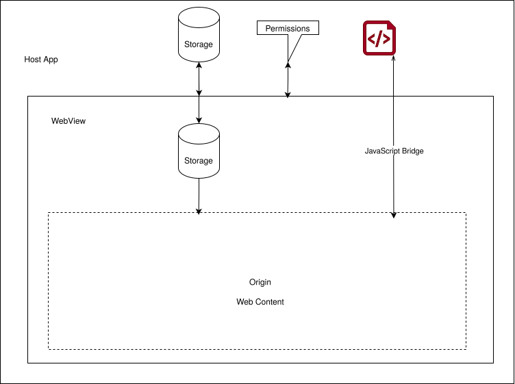

1. Intro
This document does not define the WebView security model. It documents where the configuration "a host app embeds web content and exposes a native bridge" diverges from concepts written in W3C documents like:
This report documents how WebViews diverge conceptually from security concepts, user agent duties and practices defined for browsers.
2. Rationale
The Web User Agents finding by the TAG states the key claim for user agents as software components :
WebView libraries are not user agents on their own and do not implement the user-agent duties; the embedding application inherits the duties if it acts as a user agent, and "developers need to take extra care … when using a non-user-agent WebView to implement an in-app browser."
It does not say how. This document is the mechanism-level account of how a WebView configuration causes the embedding app to succeed or fail at each duty.
3. Scenario / Configuration
WebViews can be used in many different ways but one very typical configuration has the most security critical consequences.
A host app embeds web content and exposes a native bridge.
- A hybrid app using a framework like Capacitor, Cordova or Tauri
- A super app using a WebView to provide MiniApps
4. Terminology
- Host app
-
A native application that embeds a WebView component to display and interact with web content. The host app has access to native WebView APIs and can inject scripts, handle permissions, and mediate communication between the embedded web content and native functionality.
- WebView
-
See WebViews
- Types of WebViews
5. Diagrams

6. Duties
Looking at the duties, design principles and the threat model for the web we can list areas where WebViews diverge. The list is not exhaustive.
6.1. Protection
If users have a realistic expectation of safety, they can make informed decisions between Web-based technologies and other technologies. For example, users may choose to use a web-based food ordering page, rather than installing an app, since installing a native app is riskier than visiting a web page.
6.1.1. Host control over content (integrity)
The host app can intercept and sometime rewrite requests and responses in the WebView. WebViews sometimes also can register their own custom schemes.
6.1.2. Same Origin Policy
WebView APIs let the host app inject and execute JavaScript and CSS into an site regardless of the origin policy.
6.1.3. Sandbox / process isolation
How does sandboxing and process isolation work in WebViews? [Issue #2]
6.1.4. Transport: TLS, mixed content
The host app can change TLS settings without the user noticing and allow insecure transports.
6.1.5. Permissions
Web permissions like geolocation are handled by the host through callbacks from the WebView API. WebViews usually have no user interface for permission prompts like the browser. The host app can silently allow or dismiss permission requests from web pages. This may break web sites unexptectedly for the user at best or grant permissions unexptectedly at worst.
6.1.6. Storage
Browser-like WebViews usually share their state with the systems browser.
Fully-fledged WebViews usually have their own storage scoped to the app.
WebViews provide APIs to create "CookieStores" that let the host app developer decide how state is shared between WebView instances.
To the user it’s therefore not really transparent how storage is handled.
6.1.7. Anti-Tracking
The user has usually no way to configure anti-tracking measures. The host app might or might not be able to handle anti-tracking capabilities of the WebView. So there is no transparency to the user if their browsing is protected by anti-tracking technology. WebViews have no UI to inspect how cookies are blocked.
- WKWebView has Safaris Intelligent Tracking Prevention (ITP) enabled by default
- In Android WebView third party cookie tracking can be allowed or blocked via the CookieManager without the use knowing or consenting.
6.2. Honesty
Users depend on trusted user interfaces such as the address bar, security indicators and permission prompts, to understand who they are interacting with and how. These trusted user interfaces must be able to be designed in a way that enables users to trust and verify that the information they provide is genuine, and hasn’t been spoofed or hijacked by the website.
6.2.1. Trusted UI / visible origin
The user usually cannot see the origin and TLS status in full screen WebViews.
6.2.2. Security/permission indicators
The host app has control of permission prompts or UI if elevated privilegdes are used.
7. Comparison Table
Should we add WebView implementations and show examples? [Issue #1]
8. Best practices
Practical advice to follow when using WebViews.
8.1. Pick the correct type
No OAuth in fully fledged WebViews
8.2. Turn on only what you need
Turn off JavaScript if you don’t need it, don’t use WebView APIs that you don’t need.
Don’t grant permissions you don’t need. Double check and verify.
8.3. Secure bridges
If you implement a bridge between the web and native layer make sure everything is properly validated and only things you need are exectured.